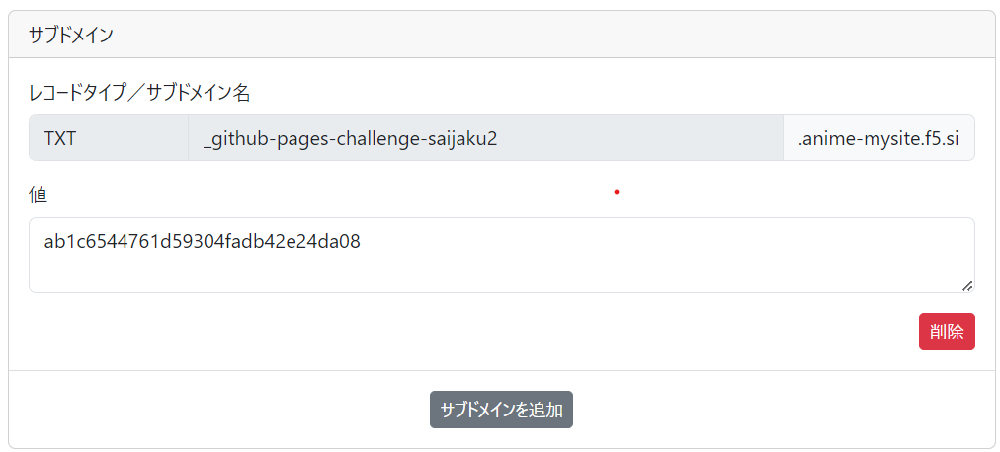
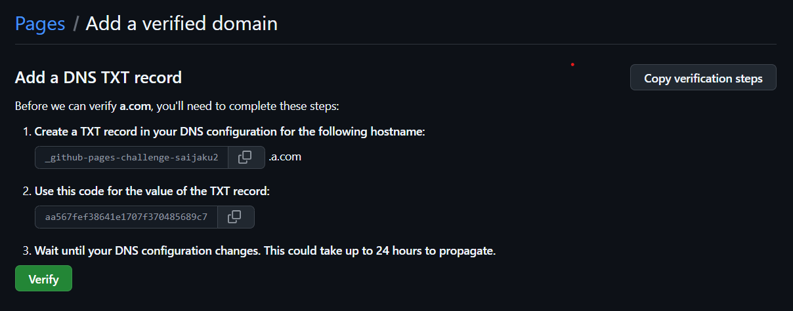

最弱のサイトのプログラムの謎 part2
前回とは少し違う説明をしていこうと主もいます
サイトのドメイン(URL)を取得するには？
まず、前提としてHTMLファイルとCSSファイルとJSファイルが完成しているものとします。
必要なもの
自分もDDNS nowを使っている。
①リポジトリを取る
まずGithubにログインして作成したファイルをリポジトリにアップロードします。 無料で公開するにはパブリック リポジトリにする必要があります。

②ドメインを用意
(これはやらなくても公開できますが短いURLが作れるのでやるのをおすすめします)
WEBサイトを公開するにはドメインが必要ですがドメインは持ってるだけで更新料がかかります。
無料のドメインも無い訳ではないですが安全性に不安があるのでここではダイナミックDNSサービスのDDNS Nowを使います。
DDNS Nowは永久無料で維持費やドメイン購入費などもかかりません。
.f5.siのサブドメインが取れて削除しない限り、他人にドメインが取られることがないという優れものです。

取得できたら設定のDNS設定を開いて「CNAMEレコードやURLリダイレクト」の項目に
[githubのユーザー名].github.ioと入れて保存します
③TXTレコードを入力する。
しばらく下をスクロールを押すと、サブドメインを追加と書いてあるので、それを押します。
AレコードかTXTレコードかCHAMEレコードを選択できる項目があるので、TXTレコードを選択します。
次にGithubに行き、設定→Pagesをクリックします。
そしたらさっき自分で取得したドメインを入力します。

そしたら、次にこのようにTXTレコードが出てきているので、さっきのf5.siの方に戻って、上の値をレコードタイプに張り付けます。そして、下の値は値の方を張り付けてください。
あとはverifyを押して、successが出れば成功です。これでDDNS nowの方は終わりです。
④Github pageで公開
最後にGithubに戻ってHTMLファイルなどを追加したら、リポジトリのSettingからPagesを開きます。

なぜかカスタムドメインの枠がないので一回SourceをGithub ActionsにしてDeploy from a branchにもどします。
次に、Branchをnoneからmainに変更してsaveボタンを押します。
最後にデプロイするブランチとさっき取得したサブドメインを入力してSaveを押します

するとDNS Check in Progressとなるので終わるまで待機します

DNS check successfulとなってしばらくするとこのような表示になってアクセスできるようになります

これで終わりです！お疲れさまでした！